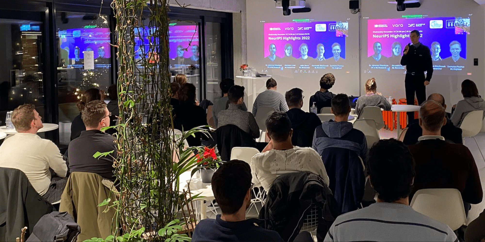
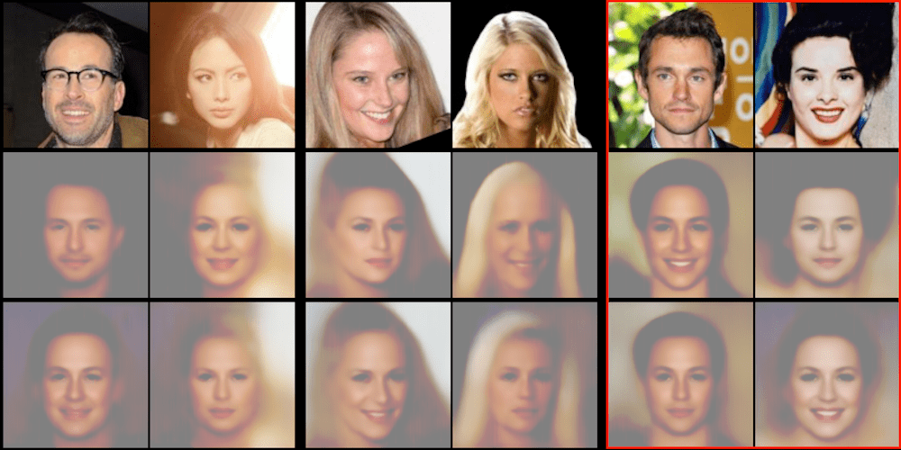
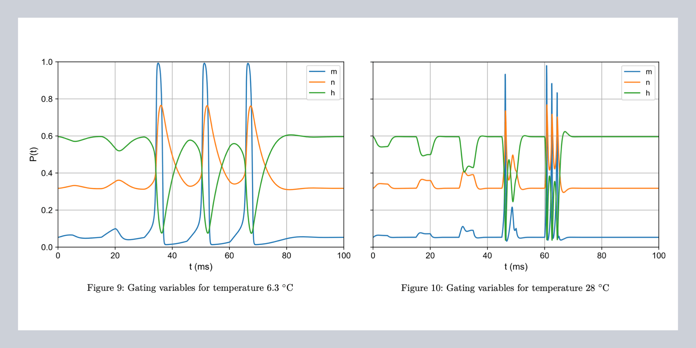
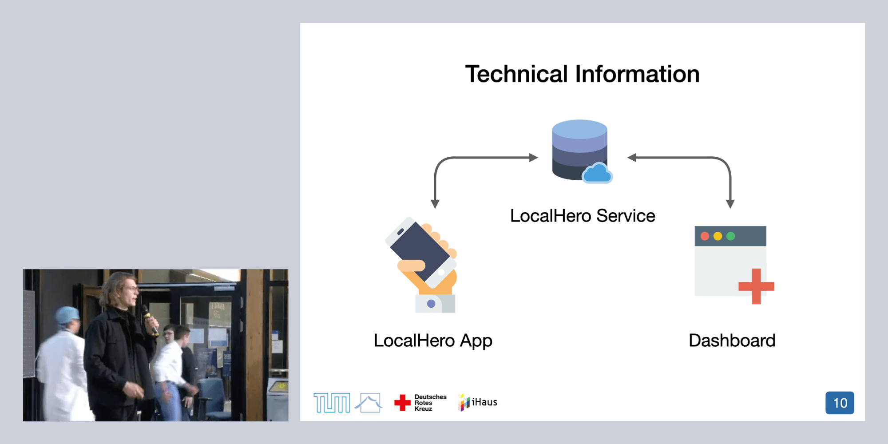
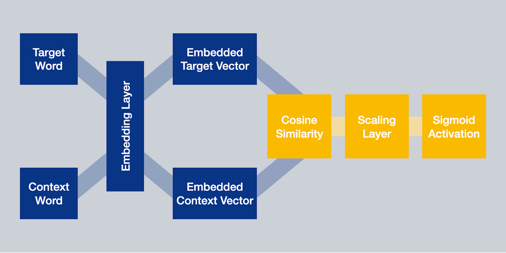

I am the host of the monthly public paper discussion group at the AI Campus Berlin. With
this event, we hold space for the Berlin ML community, scientific exchange, and education. We
host a colorful mix of speakers, ranging from in-house engineers and researchers to external
speakers. Hit me up if you're interested
in speaking.
— with Dr. Otterbach.



I took part in the Machine Learning in Computer Graphics practical offered by the
Blavatnik School of
Computer Science at Tel Aviv University. In a small team, we developed a new
method for self-supervised class and content disentanglement.
— with Prof. Cohen-Or

I participated in a course on neuroprosthetics at the TUM Chair for Bio-inspired Information Processing.
In the practical part, I coded up the infamous Hodgkin-Huxley model and simulated neuronal
behavior with different electrical stimuli. Further, I implemented basic encoding strategies for
cochlear implants and a noise vocoder to study the signals as perceived by the patient.
— with
Prof. Hemmert

In my master's, I took part in TUM's software-engineering practical iPraktikum.
Our team built the community-based iPhone application LocalHero for the German Red Cross in
cooperation with an industry partner. The system connects people in need of general
assistance or with urgent medical emergencies with helping users around them. — with
Prof. Brügge

In the master's seminar Applied Deep Learning in Natural Language Processing at the chair for Political Data Science, I
improved an
existing approach to generate word embeddings. I used this system to compare gender bias in
religious texts. — with Prof.
Hegelich